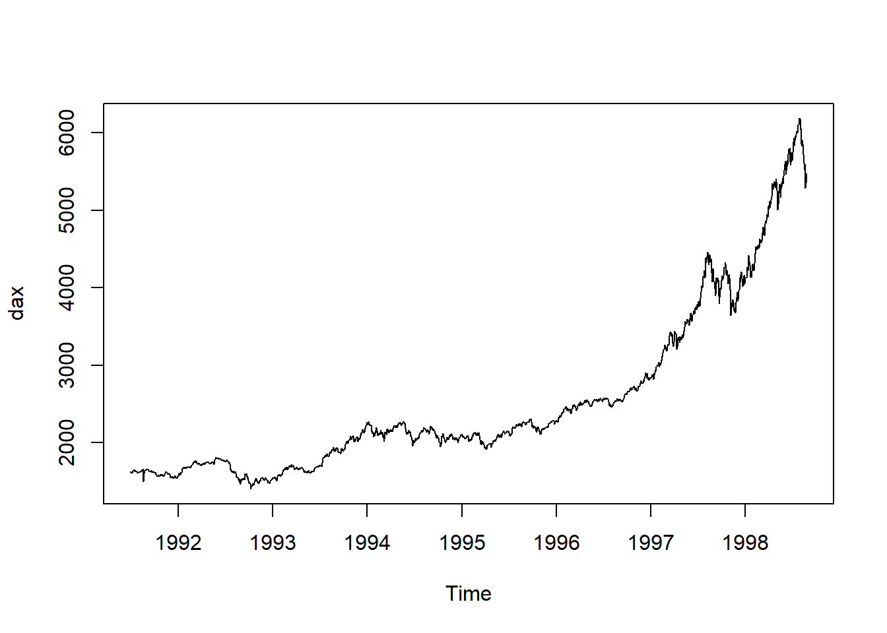

8 Modellbygging
Vi har allerede sett på hvordan vi kan sammenligne modeller “in-sample”. For å sammenligne tidsrekkemodeller bruker en ofte også å sammenligne hvor godt modellene predikerer observasjoner som ikke har vært inkludert når man tilpasser modellen. Dette heter på godt norsk å vurdere “out-of-sample” egenskapene ved modellen.
Det finnes mange varianter for å undersøke dette, og under skal vi ta en titt på en enkel variant.
Oppgave Vi viser hvordan dette gjøres for en modell med eksponensiell glatting. Du skal gjenta prosedyren, men for en ARIMA-modell (velg den med best AIC, hint: auto.arima). Sammenlign så out-of-sample egenskapene til til disse to modellene.
8.1 R-øving
1. Data Vi skal i denne øvingen prøve å finne en god modell for dax-indeksen:

2. Trening og test data Vi ønsker f.eks å teste hvor god modellen er til å predikere de 10 siste observasjonene i datasettet. Vi deler derfor dataene inn i et treningssett bestående av alle observasjoner utenom disse 10 siste observasjonene, og et testsett bestående av de 10 siste observasjonene:
3. Estimering og prediksjon Vi tilpasser så en modell til treningssettet ved bruk av eksponensiell glatting og predikerer 10 tidssteg frem for å få prediksjoner av testsettet:
Merk at når vi ikke spesifiserer noen argumenter i HoltWinters vil en mer avansert modell bli tilpasset, samtidig som glattingsparameteren faktisk vil bli estimert ved å minimerer MSE.
3. Out-of-sample vurdering
Vi kan så sammenligne disse prediksjonene pred_exp med de faktiske observasjonene test ved å “måle” hvor langt disse er fra hverandre. Funksjonen accuracy som kommer med forecast pakken regner ut flere forskjellig mål på avstand:
## ME RMSE MAE MPE MAPE MASE
## Training set 1.251117 35.82454 23.42652 0.03438446 0.8276219 0.04295353
## Test set -317.477645 350.63504 317.47765 -5.82900543 5.8290054 0.58210884
## ACF1 Theil's U
## Training set 0.07394258 NA
## Test set 0.62441059 3.510695Hver kolonne i utskriften over representerer et slikt mål, og det er rad nummer to med navn “Test set” som vi er interessert i siden det er utregningen av disse målene mellom prediksjonene og testsettet (Den første raden representerer in-sample egenskapene). Jo mindre disse verdiene er jo mindre er avstanden mellom prediksjonene og de sanne verdiene i vårt testsett.